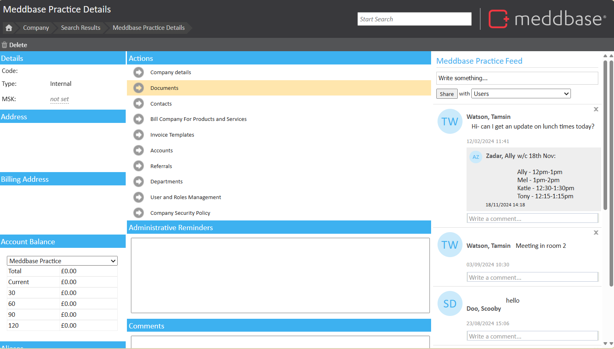
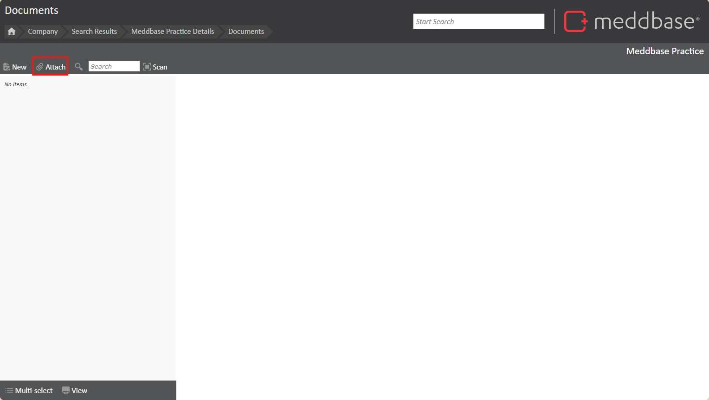
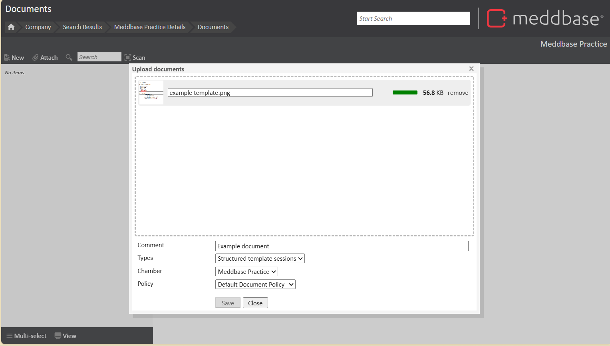
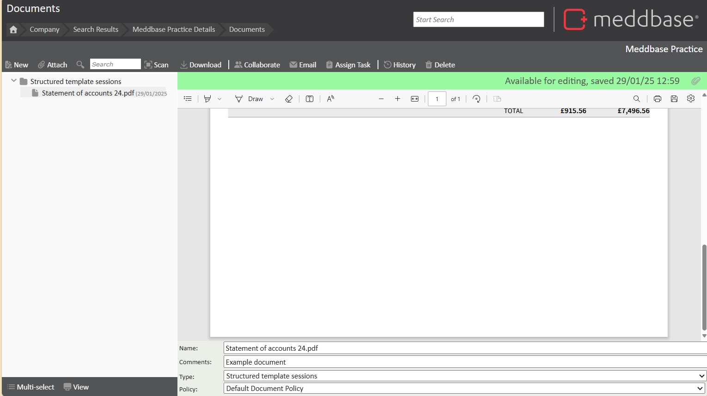

Each company within Meddbase has a Documents section that allows users to store and manage relevant documents centrally. This ensures that important files are accessible to authorised users, both locally and remotely.
For example:
If you have an Insurer set up as a company, you can attach PDFs related to their schedule or contracts.
Your main billing company also has a Documents section, which can function as a general filing system for shared information.
This article explains how to attach a document to a company's record.
Find the company in Meddbase:
Navigate to the Company Home Page.
Click on Documents.
By default, this page will be empty unless documents are already attached.

Attach a new document:
Click the Attach button to open the document upload window.
Click Browse to locate the file you wish to upload.
Click Upload. The file name will be displayed once uploaded. 
Categorise and add comments:
Assign a Type (similar to adding it to a folder) to help categorise the file.
Optionally, add additional comments for context.

Finalise the attachment:
Click Save, and the file will be attached to the company record.

If the file is a PDF, or image, Meddbase will generate an on-screen preview.
Other file types must be downloaded to be viewed.
To download a file, click Download, and the file will open locally.
To learn more about interacting with the document page, click here.